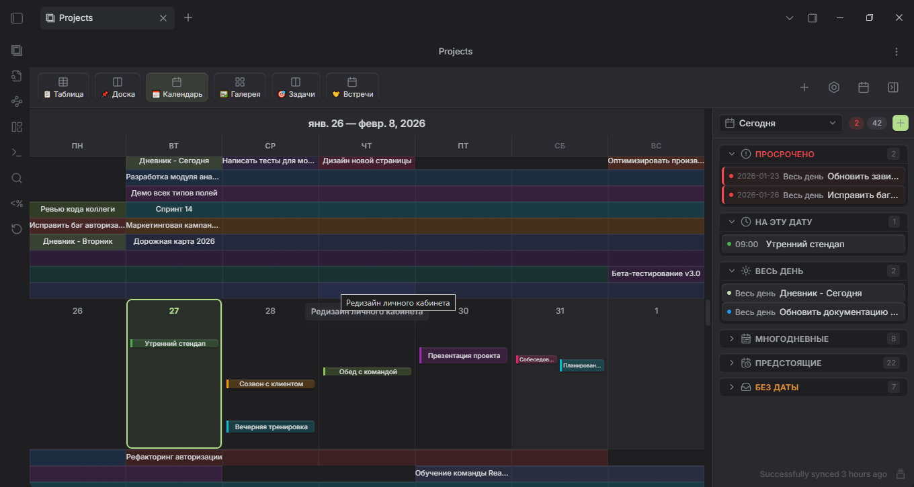

Documentation follows the source code; an installed release may differ.
Projects Plus
Русский · Website & ideas · User guide · Documentation · Roadmap
Projects Plus helps you work with Obsidian notes as a project: compare records in a table, arrange them on a board, plan events in a calendar, and build an overview on a Dashboard.
Each record remains a Markdown file. Fields such as status, date, and assignee live in note properties — the YAML block at the beginning of the file. Editing an ordinary writable field in the plugin updates the note.
What you can do
| Task | Tool |
|---|---|
| Compare records and edit their properties | A table inside a Dashboard block |
| Organize tasks by status | Board with draggable cards |
| Browse meetings and deadlines | Calendar with year-to-day views |
| Browse materials by cover image | Gallery |
| Combine records, charts, and metrics | Dashboard with configurable blocks |
| Total up related records | Rollups through a relation, and reverse ones — records that link here |
| Compare figures across projects | Charts with several series, another project's data and a second axis |
| Select the notes to include | Folder, tag, built-in filtered query, or Dataview |

This illustration shows one interface configuration; your installed version may look different.
Installation
Once Projects Plus is listed in the Obsidian community directory, install it from Obsidian: Settings → Community plugins → Browse, search for Projects Plus, then select Install and Enable.
To install a release by hand:
The current version is 3.7.0: configurable gallery layouts and card fields, resizable card frames, board thumbnails, filters in the view settings, touch-first behaviour on phones and tablets, and styles that follow your Obsidian theme. 3.6.3 named the plugin Projects Plus; 3.6.1 brought a demo of three linked projects. The first version in the Obsidian community catalogue format is 3.6.0. Packaged builds are in GitHub Releases; it needs Obsidian 1.8.7 or newer, on desktop or mobile. See the changelog for what changed.
- Choose a release and download all three files from it:
main.js,manifest.json, andstyles.css. - Create
.obsidian/plugins/obs-projects-plus/inside your vault and place the files there. If you use a custom Obsidian configuration folder, use that folder instead of.obsidian. - Restart Obsidian and enable Projects Plus in Community plugins settings.
When updating, replace these three files with files from the same build. Keep data.json: it contains your project and view settings.
Usage
Create your first project:
Create a
Projectsfolder in your vault and a note namedFirst task.mdinside it:--- title: First step status: todo startDate: 2026-09-15 ---Open the Obsidian command palette and find Create new project plus.
Name the project, choose Folder as its source, and select
Projects.Open it with Show projects plus. Use the add-view control to add a view; for a table, use a data block on a Dashboard.
Change the record's
status, then open its Markdown file: the updated value should be stored in its properties.
To explore prepared data, use Create demo project: it creates three linked projects — a massage practice, a wellbeing tracker and a personal budget — whose data flows between them. The welcome dialog and the empty projects screen offer it too. A separate demo vault is also available.
Privacy and access
Projects Plus works with your vault through the Obsidian API. It has no separate server or telemetry. External image and cover URLs may load over the network; use images stored in your vault for local-only content.
- Vault files. To find the notes of a project and the records that link to one another, it lists the files in the vault and reads their properties. It writes to a note only when you edit a record, create one, or run an action such as creating the demo.
- Clipboard. It writes when you explicitly copy a formula debug report or startup report; it does not read the clipboard.
- Settings. Projects and views are stored in the plugin's
data.jsoninside your vault.
Continue
- User guide: sources, views, filters, templates, and troubleshooting.
- Note templates: examples for tasks, meetings, and reviews.
- Roadmap: what comes next.
- Changelog and issue tracker.
- Contributing and custom view API.
See Contributing to report a reproducible issue, improve the documentation or contribute code. Release notes describe the behaviour and limits of each published version.
Projects Plus is based on Marcus Olsson's Obsidian Projects. The current maintainer is Park Pavel. Licensed under Apache 2.0; see NOTICE for attribution.